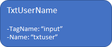
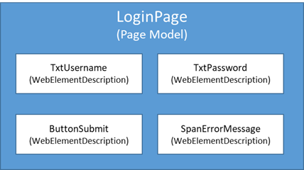

Test Web Applications
With functionalities provided by AXA.WebEngine.Web, it is easy to build Selenium WebDriver powered tests running on Desktop and Mobile browsers. To test web application, we usually need to open the web browser and perform two kinds of actions on system under test:
- Perform actions on Web Elements: The button we want to click, the textbox we want to fill, etc.
- Compare the information retrieved from some Web Element with expected value.
In WebEngine Framework, we have provided BrowserFactory to easily manage web browsers and selenium webdrivers, and PageModel and WebElementDescription to manage Web Elements.
Prerequisites
To test web applications with WebEngine Framework, you'll need to have follow knowledges as pre-requisites:
- Basic knowledge on Web and HTML Document
- Able to use Development Tools provided by Web Browser to inspect Web Elements
- Have basic knowledge on Selenium WebDriver, either in C# or Java
Use BrowserFactory to manage Selenium WebDriver
BrowserFactory is used to open selected browser of which the test suite will execute on. For example, a single line of code:
var driver = BrowserFactory.GetDriver(AXA.WebEngine.Platform.Windows, AXA.WebEngine.BrowserType.ChromiumEdge);
Will perform following actions:
- Determine the Edge browser installed on your computer
- Download the Edge WebDriver from official repository according to its version
- Initialize the Selenium WebDriver
For mobile testing, the following line of code:
var driver = BrowserFactory.GetDriver(AXA.WebEngine.Platform.Android, AXA.WebEngine.BrowserType.Chrome);
Will perform following actions
- Connect to Selenium Grid or Appium Server
- Initialize Selenium WebDriver and opens Chrome on selected device
- Returns an AppiumDriver to end user.
Use ElementDescription to identify Web Elements
WebElementDescription is used to identify a test object (Button, Text Box, Label, or other WebElements) on the web page. A Web Element can be identified by one or more properties, for example, its Tag Name, Id, Name, CssClass, XPath or other HTML Attributes.
WebEngine Framework will use provided properties to filter and select element from current web page.
For example, to identify the <input> tag we may use these two attributes:

//In C#, you can declare the Web Element with any combination of properties
var TxtUserName = new WebElementDescription(driver)
{
TagName = "input",
Name = "txtUser"
};
//then perform any actions on this object.
TxtUserName.SetValue("admin@test.com");
In WebEngine Framework, object identification is secured against web page synchronization and refresh. That means there is no need to add time wait everywhere in the code as many do, The framework will handle synchronized page loading, or asynchronized page update transparently.
Note
The object WebElementDescription is not the IWebElement itself used by Selenium, but a descriptor indicating how to identify the element.
Use PageModel to store test objects
One of the best practices of test automation is to separate the object identification and the logic of the test script. In WebEngine Framework, you can store one or more test objects into a PageModel.
In practice, imagine a login page contains username and password, the submit button and a span containing error messages. You can create a PageModel named LoginPage, containing the above 4 test objects which will be used in the script.

As a result, you can declare the page model as following:
public class LoginPage : PageModel
{
public WebElementDescription TxtUsername = new WebElementDescription
{
TagName = "input",
Name = "username",
};
public WebElementDescription TxtPassword = new WebElementDescription
{
TagName = "input",
Name = "password",
};
public WebElementDescription ButtonSubmit = new WebElementDescription
{
Id = "submit"
};
public WebElementDescription SpanErrorMessage = new WebElementDescription
{
TagName = "span",
ClassName = "alert errormessage"
};
public LoginPage(WebDriver driver) : base(driver)
{
}
}
In the test script, when you need to perform actions on this login page, just initialize the page model and use it. The test script is object-oriented, clear to read and easy to maintain.
LoginPage page = new LoginPage(driver);
page.TxtUsername.SetValue("admin@test.com"); //fill username
page.TxtPassword.SendKeys("password"); //fill password
page.ButtonSubmit.Click();
if (page.SpanErrorMessage.IsDisplayed) //check if error message shows
{
//error message displayed, test failed.
return false;
}
else
{
//error message not displayed, test success.
return true;
}
Example Projects
Sample projects are available using different language and test approaches, please follow this link: Sample Projects